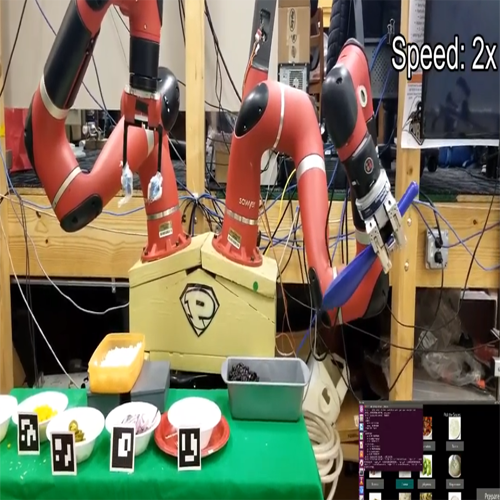
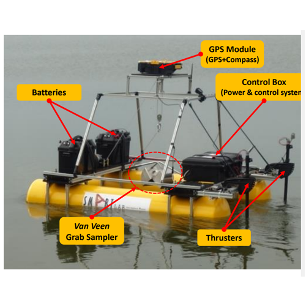
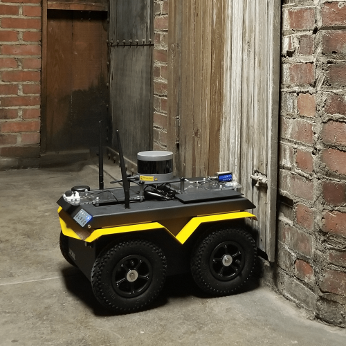
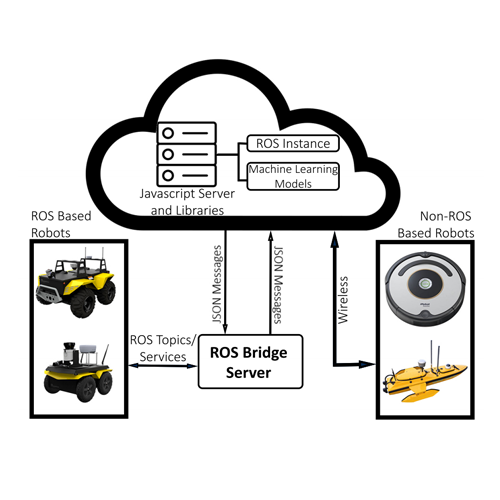
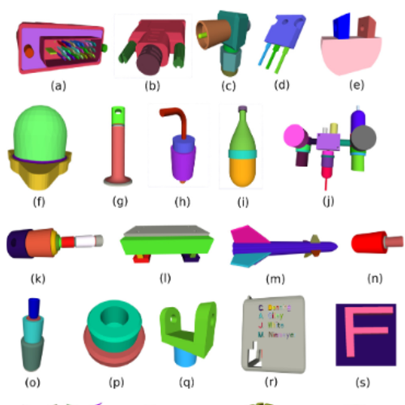
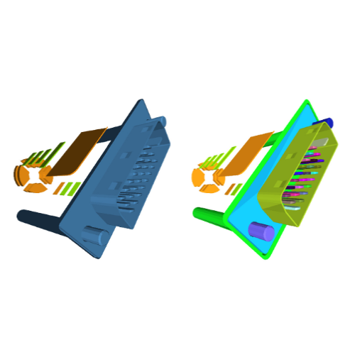
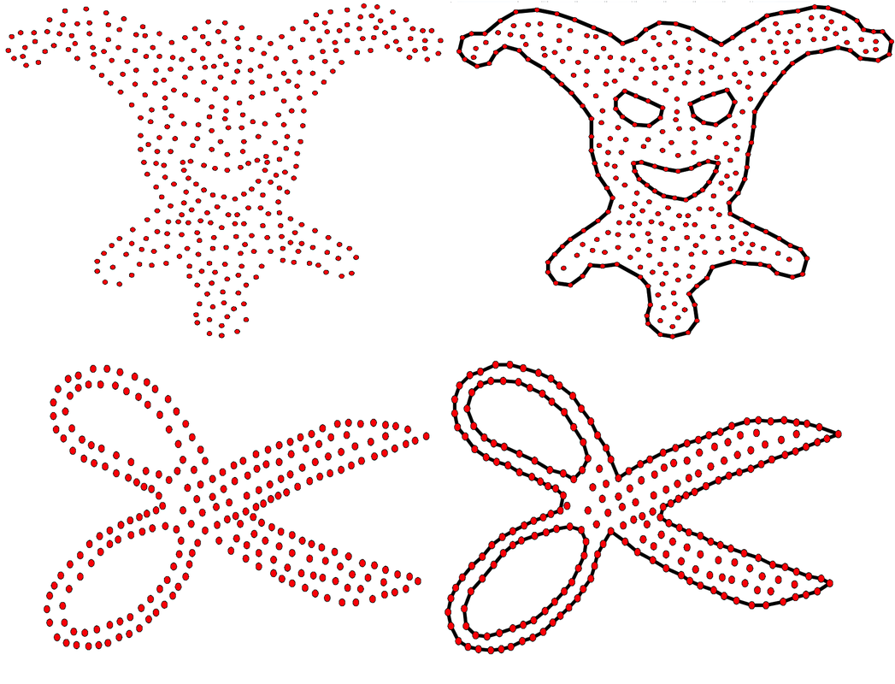
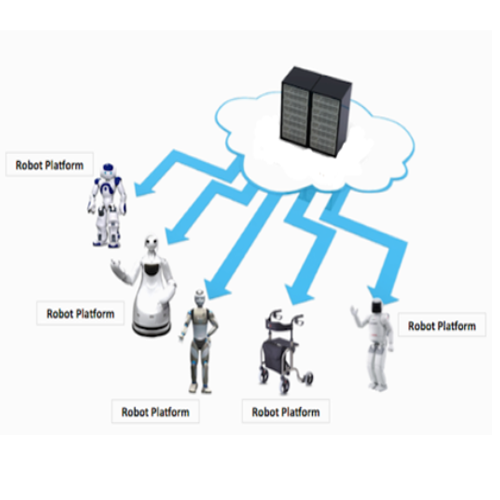
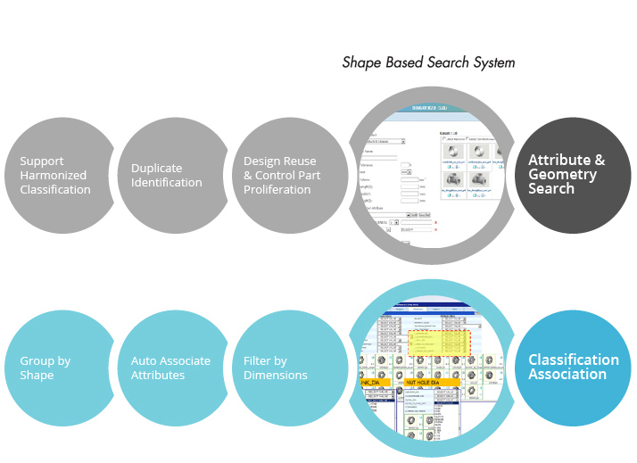

I'm a Ph.D student in the Smart Machine and Assistive Robotics Technology (SMART) Lab at the Purdue University advised by Byung-Cheol Min.
My research interests are focused on systems that have to operate and adapt under sparse, noisy and incomplete information.
Most relevant to robotics, this scenario requires careful leveraging of indirect sources of information to make intelligent decisions, such as priors acquired through simulation, additional sensors indirectly (nontrivially) measuring relevant quantities, communication with other agents, different indicators of task progression.
Lately I have been working in the areas of reinforcement and imitation learning, where I am investigating learning under sparse rewards and a sample efficient adaptation to new tasks by combining simulation, automatic task curriculum and meta learning.
I applied my research to a variety of platforms including robotic arms, underwater vehicles and autonomous cars.
A more broad overview of my latest research direction can be found here.
During my Ph.D program at RESL I did a number of internships at:
Nvidia (Summer, 2017) where I was part of the Learning & Perception Research team lead by Jan Kautz and collaborated with Stan Birchfield and Jonathan Tremblay working on the project of curriculum learning for RL and the project on learning human-readable plans from demonstrations;
Volkswagen Electronics Research Lab (Summer, 2016) with the research team lead by Lutz Junge and collaborated with Premkumar Natarajan while working on neural network compression;
I studied Computer Science and Engineering at Anna University, Chennai, India and Computer Science at the University of Southern California (USC).
In May 2010, I graduated cum laude obtaining Master of Engineering degree at BMSTU.
In May 2015, I received Master of Computer Science degree from USC where I am continuing my Ph.D.
[01/2020] I will be participating in the NASA Space Robotics Challenge as a part of Purde-Hongik Team. I will be working as Algorithm Developer in the challenge.
[12/2019] We submitted a paper titled "Investigating the Effect of Deictic Movements of a Multi-robot" to the International Journal of Human-Computer Interaction. A big thanks to the co-authors Ahreum Lee and Wonse Jo!
[12/2019] We submitted a paper titled "An Adaptive Multi-human Multi-robot System Framework Based on Individual Human and Robot Condition and Performance" to the IEEE Robotics and Automation Letters. A big thanks to the co-authors Tamzidul Mina and Wonse Jo!
[10/2020] A paper titled "Development of an Unmanned Surface Vehicle for Remote Sediment Sampling with a Van Veen Grab Sampler" was presented at the 2019 MTS/IEEE Oceans conference, Seattle, WA.
|  |
Training a ChefBot through demonstration
Work in Progress S.S.Kannan, V.M.B.S Moorthy |
|---|
|  |
Development of an Unmanned Surface Vehicle for Remote Sediment Sampling with a Van Veen Grab Sampler
MTS/IEEE Oceans Conference (2019) J.H. Bae, S. Luo, S.S. Kannan, Y. Singh, B. Lee, R.M. Voyles, M. Malaga, E.G. Zenteno, L.P. Aguilar, B.C. Min |
|---|
|  |
Mobile Robot-Assisted Mapping of Materials in Unknown Environments
arXiv preprint arXiv:1812.05489 (2018) S.S. Kannan, W. Jo, R. Parasuraman and B.C. Min. |
|---|
|  |
Smart Cloud: Scalable Cloud Robotic Architecture for Web-powered Multi-Robot Applications
arXiv preprint arXiv:1912.02927 (2019) M. Penmetcha, S.S. Kannan and B.C. Min. |
|---|
|  |
Autoencoder-based part clustering for part-in-whole retrieval of CAD models
Computers & Graphics 81, 41-51, 2019 L.P. Muraleedharan, S.S. Kannan, R. Muthuganapathy |
|---|
|  |
Random cutting plane approach for identifying volumetric features in a CAD
mesh model
Computers & Graphics 70, 51-61., 2018 L.P. Muraleedharan, S.S. Kannan, A.Karve R. Muthuganapathy |
|---|
|
Reconstruction using a simple triangle removal approach
SIGGRAPH Asia 2017 Technical Briefs S. Methirumangalath, S.S. Kannan, A.D. Parakkat, R. Muthuganapathy |
|---|
|  |
Hole detection in a planar point set: An empty disk approach
Computers & Graphics 66, 124-134, 2017 S. Methirumangalath, S.S. Kannan, A.D. Parakkat, R. Muthuganapathy |
|---|
PatentsVolumetric feature extraction in mesh representation of a CAD model using random cutting planes and graph traversalsIndian Patent, Application No: 201841008900, 2018 Shyam Sundar Kannan, Ramanathan Muthuganapathy, Lakshmi Priya, Srikanth Sankaranarayanan. |
|---|
|  |
Cloud-based unifed controller for multi-robot systems
|
|---|
|  |
Decomposition of CAD models for partial search
|
|---|
|
Step into Programming with Visual Basic .NET
Edition 5: Chapter 15: Introduction to VBA S.S.Kannan, G. Ravai, I.M.Baggili |
|---|